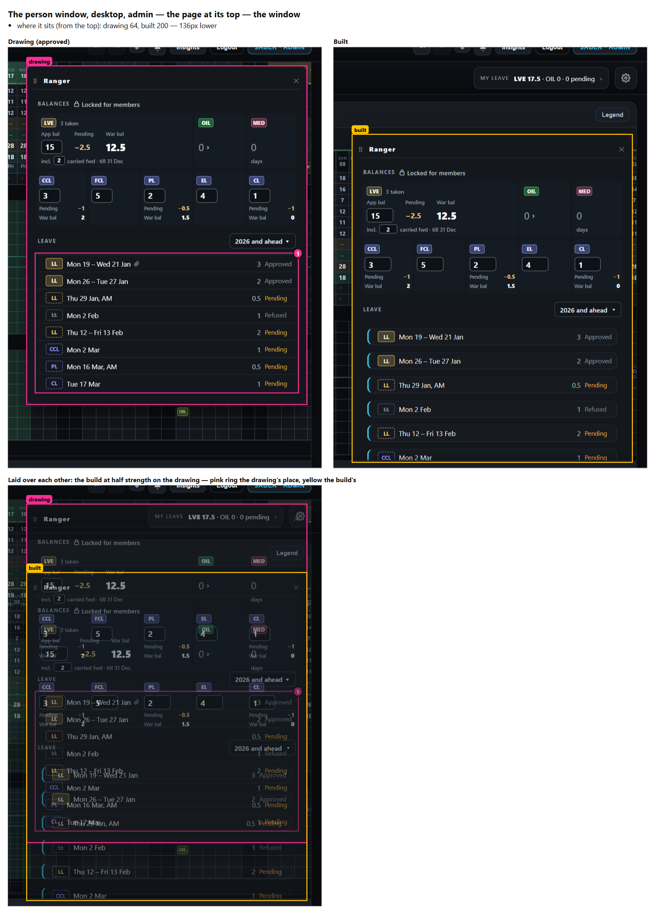
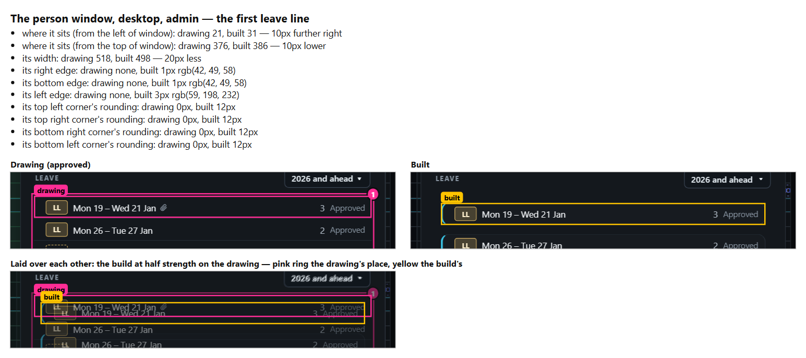
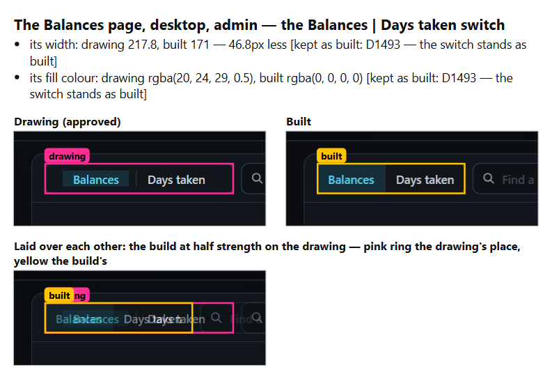
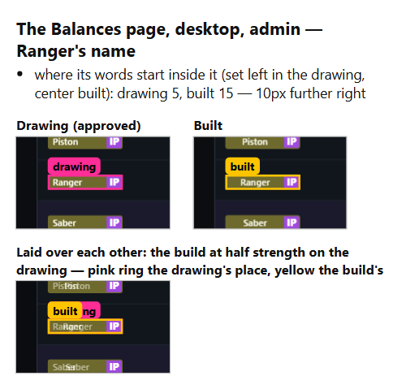
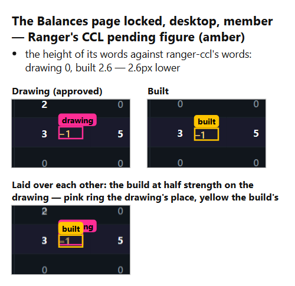
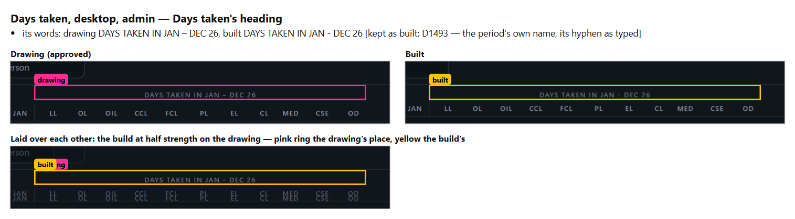
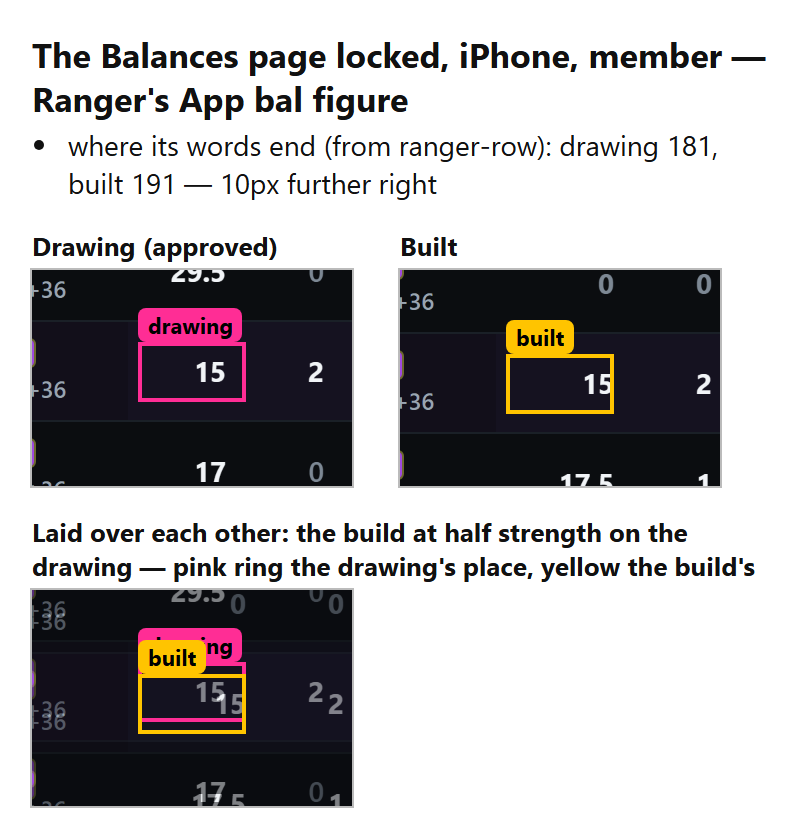

The drawing check
A script that measures a built screen against its approved drawing and lists every difference, each with the drawing and the build side by side. It is built and was tested on the Leave War's M5a screens as they were before this morning's fixes, on your PC's size and your iPhone's.
Nothing waiting for youAnswered on 29 Oct: the check is a standing step of every build with a drawing (D1495); every mock-up is drawn in the app's own design (D1496); on live M5a the two window places stay as built and the iPhone's locked Balances page goes back to its drawing, filed to fix (D1497). Below: what it found on M5a before the fixes.
What it found on M5a
6 of 6differences you had been shown, all caught
Gradeswindow measured as matching its drawing, as found by eye
2 newdifferences nobody had seen
In each picture: left the approved drawing, right the build, below the two laid over each other. Pink rings the drawing's place, yellow the build's. Tap a picture to enlarge it.
1 · The person window on a computer sits 136 points lower than drawn
being fixed (D1493)
With the page scrolled, as in the drawing, it matched. With the page at its top it stood lower and its last lines fell below the screen. The build had copied the drawing script's way of placing the window, which depends on the scroll. The check now looks at both.

2 · Leave lines built as rounded cards with a blue bar
being fixed (D1493)
The drawing has flat rows between thin lines. The check names the rounded corners, the 3-point blue edge, and the line 20 points narrower.

3 · The Balances | Days taken switch is 47 points narrower
kept as built (D1493)
Listed and marked as kept by your ruling, so it no longer stops the check.

4 · Names centred in their pucks instead of set left
being fixed (D1493)
On the Balances page, computer and iPhone alike.

5 · A member's locked amber figure 2.6 points low
being fixed (D1493)
Found on the computer's locked Balances row (CCL's pending figure). On the iPhone it sits on its line.

6 · Days taken's heading has a hyphen, not a dash
kept as built (D1493)

New · On the iPhone's locked Balances page the figures sit 10 points further right
new, for you to choose
Ranger's read-only figures (15, and CCL's 3) touch the right edge of their column, where the drawing keeps a small margin. His row also stands 6 points lower on the page. My recommendation: put both back to the drawing in the M5a fixes.
